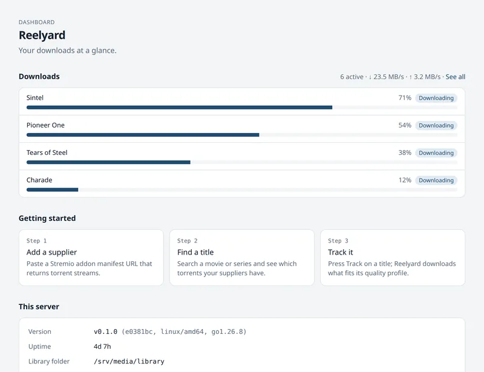
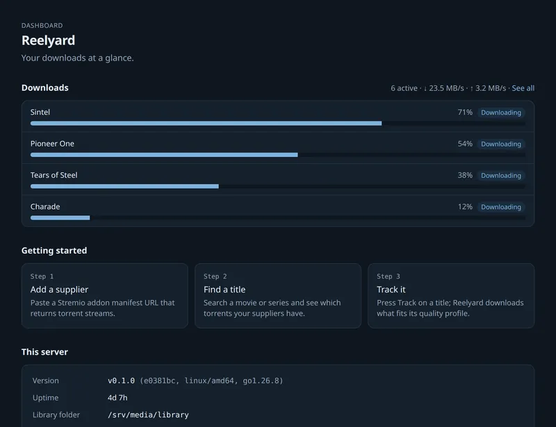
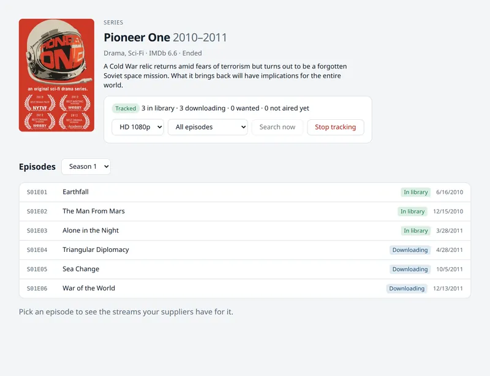
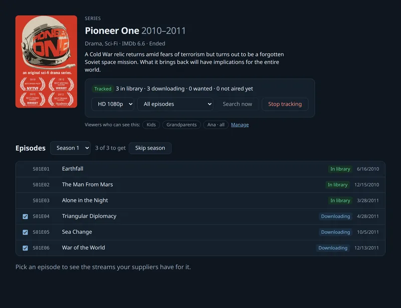
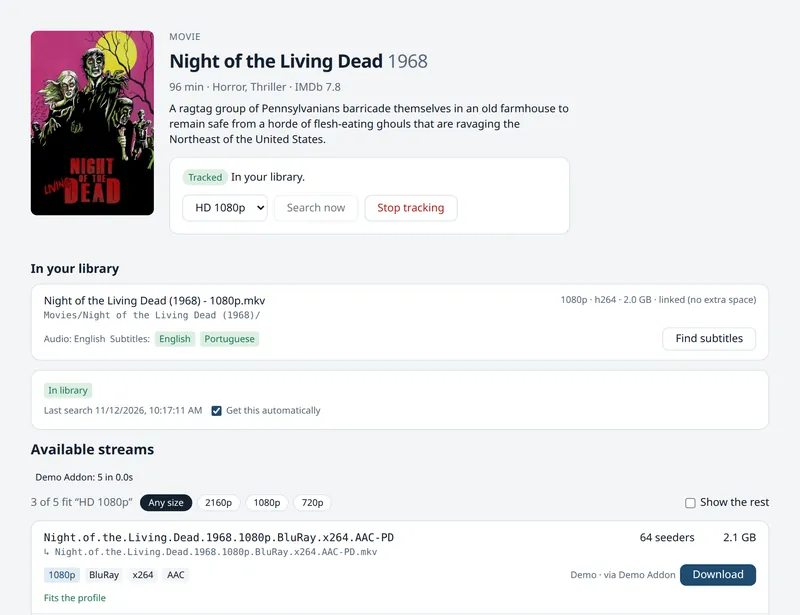
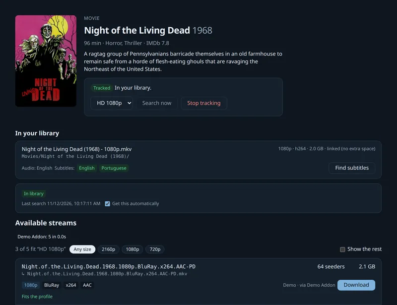
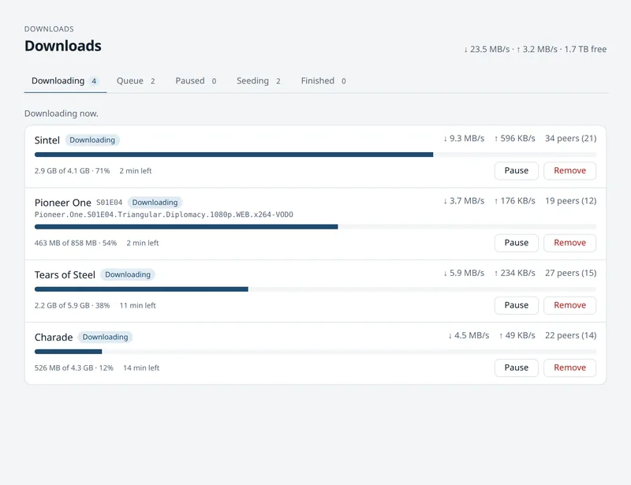
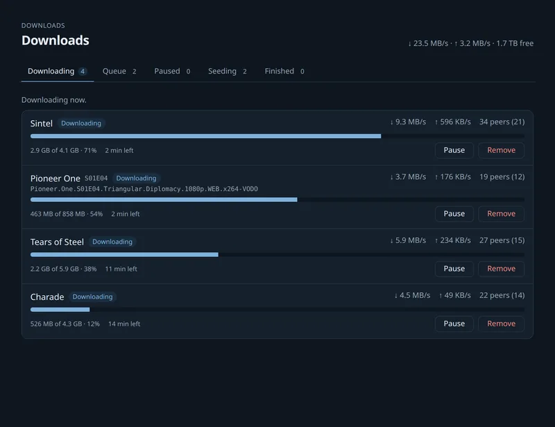

On this page
Reelyard documentation
Everything you need to install Reelyard, set it up, and get your movies and series onto your TV.
Overview
Reelyard tracks the movies and TV series you want, finds torrents for them through Stremio addons (“suppliers”), downloads them with a built-in torrent engine, and puts them in a media library with Jellyfin/Plex naming and subtitles. It also serves the library to TVs over DLNA. It's one binary for Linux, macOS and Windows, with a web UI on port 8787.
Reelyard does not condone piracy, and we host no content. Only download content you have the rights to. Public-domain films such as Night of the Living Dead (1968) are good for testing. See the legal notice.
Install
Downloads are on the releases page. After installing, open http://localhost:8787: the first visit creates your account and walks you through folders and suppliers.
Install ffmpeg alongside Reelyard where you can. It's used for audio-language checks, putting your audio language first, thumbnails and converting video for TVs that can't play a file. (The Docker image and Raspberry Pi images already include it.)
Debian, Ubuntu, Fedora, RHEL, openSUSE
sudo apt install ./reelyard_*_amd64.deb # or: sudo dnf install ./reelyard-*.x86_64.rpmThe package creates a reelyard user, stores everything in /var/lib/reelyard, and starts the reelyard systemd service (systemctl status reelyard). Removing the package keeps your data.
To keep media somewhere else, change the folders in the setup wizard, then give the service access to them:
sudo systemctl edit reelyard
# add:
[Service]
ReadWritePaths=/srv/mediamacOS
brew install --cask reelyard/tap/reelyard
reelyard install --user && reelyard start --user # start now and at every loginOr download the darwin archive and run xattr -d com.apple.quarantine reelyard once: the binaries aren't notarized.
Windows
Download the windows zip and follow INSTALL.txt inside. Double-click reelyard.exe to try it, or install it as a Windows service from an administrator terminal, then add the firewall rules listed in INSTALL.txt:
reelyard.exe install
reelyard.exe startDocker
docker run -d --name reelyard --network host --restart unless-stopped \
-e PUID=1000 -e PGID=1000 \
-v reelyard-config:/config -v /srv/media:/data \
ghcr.io/reelyard/server:latestOr with Docker Compose:
services:
reelyard:
image: ghcr.io/reelyard/server:latest
network_mode: host
restart: unless-stopped
volumes:
- reelyard-config:/config
- /srv/media:/data
volumes:
reelyard-config:/dataholdsdownloads/andlibrary/. Keeping both on that one volume lets imports use hardlinks instead of copies.--network hostis needed for DLNA discovery, since TVs find servers by multicast. Without DLNA you can publish ports instead:-p 8787:8787 -p 42069:42069 -p 42069:42069/udp.PUID/PGIDset the user that owns your files (default 1000) andUMASKtheir permissions (default002).
NAS systems
Reelyard runs on any NAS that runs Docker containers, using the image ghcr.io/reelyard/server. On every system the same three things matter:
- One media folder for downloads and library. Mount it at
/data(or/DATAon ZimaOS). Keeping both on one share lets Reelyard hardlink finished files into the library instead of copying them. - Host networking (
network_mode: host), so TVs can find the DLNA server and Reelyard's apps can find Reelyard. Without those you can publish ports 8787 (web UI) and 42069 TCP+UDP (torrents) instead. - PUID / PGID: the user and group that should own downloaded files.
UMASKsets permissions for new files (default002).
After installing, open http://<nas>:8787. The generic Compose file is deploy/compose.yaml.
ZimaOS and CasaOS
Reelyard has its own app store for ZimaOS and CasaOS (0.4.4 or newer).
- Open the App Store, choose to add a source (the + / App source menu), and paste
https://reelyard.github.io/server/zimaos/ - Install Reelyard from that source.
It uses /DATA/AppData/reelyard/config for its settings, keeps downloads in /DATA/Downloads/Reelyard, and adds Movies/ and TV/ to /DATA/Media, where ZimaOS's Jellyfin and Plex apps already look. Your ZimaOS user's PUID/PGID and time zone are filled in for you.
Without the store: App Store → Custom install → Import, and paste deploy/zimaos/Apps/Reelyard/docker-compose.yml.
Unraid
- Docker tab → Add Container → paste this into Template:
https://raw.githubusercontent.com/reelyard/server/main/deploy/unraid/reelyard.xml(or add it under Template repositories in Docker settings). - Check the two paths: Config (
/mnt/user/appdata/reelyard) and Media (/mnt/user/data/reelyard, which will holddownloads/andlibrary/), then Apply.
PUID 99 / PGID 100 and UMASK 000 match Unraid's share permissions.
TrueNAS SCALE (24.10 and newer)
- Create datasets, for example
tank/apps/reelyardandtank/media. - Apps → Discover Apps → ⋮ → Install via YAML, name it
reelyard, and paste:
services:
reelyard:
image: ghcr.io/reelyard/server:latest
restart: unless-stopped
network_mode: host
environment:
PUID: "568" # TrueNAS's "apps" user
PGID: "568"
TZ: Etc/UTC
volumes:
- /mnt/tank/apps/reelyard:/config
- /mnt/tank/media:/dataTrueNAS 25.10 requires the top-level services: key, as above. Give the apps user (568) write access to the media dataset, or use your own user's ids.
Synology DSM 7.2+
- Install Container Manager from Package Center.
- In File Station, create
docker/reelyardand a media folder such asmedia/reelyard. - Container Manager → Project → Create, path
docker/reelyard, choose Create docker-compose.yml, and pastedeploy/compose.yamlwith the volumes changed to/volume1/docker/reelyard:/configand/volume1/media/reelyard:/data. - Set PUID/PGID to your DSM user (SSH:
id <user>; usually 1026 / 100).
QNAP (Container Station 3)
Container Station → Applications → Create, name it reelyard, paste deploy/compose.yaml with the volumes changed to your shares (for example /share/Container/reelyard:/config and /share/Multimedia/reelyard:/data), and set PUID/PGID to your user (id <user> over SSH).
OpenMediaVault 7
Install the openmediavault-compose plugin, then Services → Compose → Files → Add, paste deploy/compose.yaml with your shared folders' paths under /srv/..., save, and press Up.
Any Linux machine with Docker
mkdir reelyard && cd reelyard
curl -LO https://raw.githubusercontent.com/reelyard/server/main/deploy/compose.yaml
# edit the paths, PUID/PGID and TZ, then:
docker compose up -dRaspberry Pi
Ready-made image (Pi 4 and Pi 5)
Each release has reelyard-pi4.img.xz and reelyard-pi5.img.xz: Debian Trixie (64-bit) with Reelyard and ffmpeg preinstalled and its service enabled.
- Download the image for your board.
- In Raspberry Pi Imager, choose your device, then Choose OS → Use custom and pick the
.img.xz, then your SD card or USB SSD. - Connect the Pi to your network with a cable and power it on.
- After a minute or two, open
http://reelyard.local:8787(orhttp://<the Pi's IP>:8787).
- Use a USB drive for media. An SD card is too small and too slow for downloads. Plug in a drive, then choose its folders in the setup wizard (for example
/media/usb/downloadsand/media/usb/library, on the same drive so imports are hardlinks). - Wi-Fi, user and SSH from Imager's settings: the image includes cloud-init so Imager's customisation can apply, but this hasn't been confirmed on hardware yet. A network cable always works.
- The Pi shows up on your TVs as Reelyard (DLNA) and at
reelyard.local. - A Pi 4 or 5 with 2 GB or more is plenty. Pi 3 and Zero 2 W aren't supported.
On an existing Raspberry Pi OS (64-bit)
sudo apt install ./reelyard_*_arm64.deb ffmpegThe package creates a reelyard user and starts the reelyard service, as on any Debian system.
First run
Open http://<your machine>:8787. The first visit:
- creates your account (password of at least 8 characters);
- asks where downloads and the library should go (keep them on the same disk so imports are hardlinks);
- helps you add your first suppliers.
Three quality profiles are created for you: HD 1080p, 4K and Small. Then search for a title and press Track.



Suppliers
Suppliers are Stremio addons. Reelyard uses the ones that answer with torrent streams (an infoHash) and the ones that give subtitles.
- Add them in Suppliers by pasting the addon's
manifest.jsonaddress, or pick one from Browse addons. - For configurable addons, configure them on their own site first and paste the address it gives you.
- Test shows whether an addon answers and how many of its streams Reelyard can use.
Addons that only return debrid or web links aren't usable: Reelyard needs torrent streams.
Tracking & quality profiles
Open a movie or series and press Track. Reelyard then looks for it by itself (every minute for new work, backing off from 15 minutes to a day when nothing fits), picks the best release for the title's quality profile, downloads it, and imports it. Series follow new episodes as they air.
Choosing seasons and episodes
For a series, the Track panel asks what to get:
- All episodes, only new ones, or None, I'll pick episodes;
- which seasons, as chips (regular seasons on and specials off at first). You can change them after tracking too.
In the episode list, tick get on any episode not in your library yet, or use Get whole season and Skip season. Saving a new mode or season choice applies it again to every episode; changing only the profile keeps your picks. Unticking an episode that's already downloading doesn't stop that download, only new searches.



Quality profiles
A profile sets:
- the screen sizes allowed, best first;
- file-size limits for movies and for episodes;
- audio languages in order of preference, optionally required, and subtitle languages;
- words to avoid or prefer in release names;
- the minimum number of seeders.
Edit them under Quality profiles. On a tracked title's page every stream shows whether it fits the profile, and why not.



Audio language and tracks
List the profile's audio languages in the order you prefer them, for example Portuguese then English (use ‹ to move one earlier). Releases in the first language score highest, then the next. Tick Required to skip releases in none of them.
Many files have several audio tracks. TVs and players start with the one marked as the default, often English. When the profile prefers another language the file has, Reelyard puts that track first and marks it as the default in the library's copy, so it plays first everywhere.
- The download itself isn't changed, so it keeps sharing. The library gets a copy instead of a hardlink, which takes extra space until sharing stops and the download is deleted.
- Nothing is re-encoded: the tracks are copied as they are, so it's quick and there's no loss of quality.
- It needs
ffmpeg, and works for MKV, MP4 and MOV files of tracked titles. Turn it off in Settings → Library.
Blocklist
If a download is removed, fails, or turns out to have the wrong audio language (checked with ffprobe when the profile requires one), that release is put on a blocklist for that title and Reelyard picks the next best.
Downloads



The page has tabs: Downloading, Queue, Paused (paused and failed), Seeding and Finished.
Queue
When all download slots are busy, the rest wait in the queue. Those with the most seeders start first, then those whose count isn't known yet, then those with none; among equals, the oldest first. The Queue tab lists them in that order with their seeder count. Counts come from the release when it's picked, and Reelyard asks your suppliers again for queued downloads that don't have one.
While others are waiting, a download that has had no peers and no data for 10 minutes is paused (shown as a grey "no peers" note) to free its slot. For a tracked title, that release is blocked and Reelyard looks for another. Downloads you pause yourself are left alone.
Sharing
Finished downloads keep sharing until the title's profile ratio or time limit (for downloads you started by hand: Settings → Downloads), whichever comes first. Then sharing stops, and if the file is in your library its download copy is deleted. The library file stays: it's a hardlink or a copy.
Stalls and disk space
- Downloads that make no progress for 30 minutes (adjustable) fail; tracked titles then try another release. When others are waiting in the queue, a download with no peers is paused after 10 minutes instead (see Queue).
- Downloads that wouldn't fit on disk, keeping 2 GB free (adjustable), are refused.
- Speed limits and how many downloads run at once are set in Settings → Downloads.
Ports
Peers connect on torrent_port (default 42069, TCP and UDP). Forward it in your router for better speeds.
Library & subtitles
Downloads land in <download_dir>/<info hash>/…. When one finishes, Reelyard links it into the library: a hardlink when both folders are on the same disk (no extra space used), a copy otherwise. Files are named the way Jellyfin and Plex expect:
Movies/Night of the Living Dead (1968)/Night of the Living Dead (1968) - 720p.mp4
Movies/Night of the Living Dead (1968)/Night of the Living Dead (1968) - 720p.en.srt
TV/Breaking Bad (2008)/Season 01/Breaking Bad (2008) - S01E02 - Cat's in the Bag - 1080p.mkvSubtitles come from your subtitle suppliers (for example OpenSubtitles) for the languages chosen in Settings → Library. If ffprobe (from FFmpeg) is installed, Reelyard uses it to read the real resolution and to skip languages already built into the video.
Watching on a TV (DLNA)
Reelyard has its own DLNA server, on by default. TVs, game consoles and players like VLC on your network list it as Reelyard (rename it in Settings → TVs (DLNA)) and play straight from the library, with seeking.
- Subtitles saved next to a video are offered with it, in your subtitle-language order (Samsung TVs get them too).
- Thumbnails need
ffmpeg; durations needffprobe. - Turn on converted versions in the DLNA settings for TVs that can't play a file (needs
ffmpeg). - Where you stopped and what you've watched are shared with TVs that support it.
One name per server
TVs tell DLNA servers apart by a device ID made from the server's name, so two Reelyards on the same network both called "Reelyard" get mixed up: the TV acts as if the server keeps restarting. Give each its own name (for example "Reelyard NAS" and "Reelyard PC"). Reelyard looks for a twin when it starts and every 10 minutes, and warns in Settings → TVs (DLNA) when it finds one.
Viewers: a server per family member
TVs don't sign in, so each person who watches gets their own server in the TV's sources: Settings → Viewers → Add viewer creates, say, "Reelyard · Kids" next to the main "Reelyard". On a viewer's server:
- watched marks and resume points are theirs, and a Continue watching folder at the top lists what they're halfway through (the main server has one for your account too);
- Only titles I choose limits it to the films and series you pick; other titles don't appear and their files can't be opened from that server;
- Show on these TVs shows it only on the TVs you tick (the main server has the same option). TVs are listed once they've opened any Reelyard server and are told apart by address, so give each a fixed IP in your router.
You can also choose from a title's own page: under the Track panel, Viewers who can see this has a chip per viewer. Click a limited viewer to give or take away that title (for a series, all its episodes, including future ones). Viewers who see the whole library show as "Name · all".
Each viewer's server uses the next port after the main one (8201, 8202, …); allow those in your firewall too. Anyone using a TV that shows a server can open it: hide the main server from a child's TV, and don't rely on this to keep a determined person out.
Network
- It uses TCP port 8200 (and 8201, 8202, … for viewers) and SSDP (UDP 1900, multicast); allow both in your firewall.
- Only devices on private networks (192.168.x, 10.x, 172.16–31.x, link-local) can connect.
- It isn't announced on your VPN interface or, unless you choose them, on Docker/VM bridges.
- In Docker, use host networking; multicast doesn't cross Docker's bridge network.
Jellyfin, Emby and Plex
Point your media server's Movies and Shows libraries at library/Movies and library/TV.
In Settings → Library → Jellyfin, Emby and Plex, add the server's address and an API key (Jellyfin, Emby) or X-Plex-Token (Plex); Test connection checks both. Reelyard then asks it to rescan about 30 seconds after new files arrive (several imports close together share one rescan). Keys are stored in Reelyard's database and never sent back to the browser.
Using a VPN
Set bind_interface to your VPN's network interface (wg0, tun0, …) and restart Reelyard. Every torrent connection (peers, DHT, trackers) is then bound to that interface's address, so torrent traffic can't leave by any other route.
- If the interface goes down, torrents pause and the Downloads page says so; they resume when it's back.
- If the VPN comes back with a different address, Reelyard (when running as a service) restarts itself to use it.
bind_interface: wg0 # in config.yaml
# or: REELYARD_BIND_INTERFACE=wg0Service & CLI
The packages set the service up for you. With a plain binary:
sudo reelyard install # system service: systemd (Linux), launchd (macOS)
sudo reelyard start
reelyard install --user # or a per-user service, no root needed
reelyard start --userOn Windows, run reelyard.exe install and reelyard.exe start from an administrator terminal. install writes a config file into the data folder so the service and the CLI use the same locations.
| Command | What it does |
|---|---|
serve | Run Reelyard in the foreground. |
install / uninstall | Add or remove the service (--user for a per-user one). |
start / stop / restart | Control the service. |
status | Show whether the service is installed and running. |
reset-password | Set a new password (see below). |
version | Print the version. |
Configuration
Most settings live in the web UI. The rest are in config.yaml in the data folder (or pass --config <file>):
listen: ":8787"
data_dir: /srv/reelyard
download_dir: /srv/reelyard/downloads
library_dir: /srv/media
torrent_port: 42069 # peers connect here (TCP+UDP); forward it in your router
bind_interface: wg0 # optional: torrents only use this interface (e.g. your VPN)
announce: true # apps on the local network find Reelyard by multicast DNS
log:
level: info # debug | info | warn | error
format: text # text | json
file: true # rotating file in <data>/logsEnvironment variables override the file:
| Variable | Setting |
|---|---|
REELYARD_LISTEN | listen |
REELYARD_DATA_DIR | data_dir |
REELYARD_DOWNLOAD_DIR | download_dir |
REELYARD_LIBRARY_DIR | library_dir |
REELYARD_TORRENT_PORT | torrent_port |
REELYARD_BIND_INTERFACE | bind_interface |
REELYARD_ANNOUNCE | announce |
REELYARD_LOG_LEVEL | log.level |
REELYARD_LOG_FORMAT | log.format |
REELYARD_LOG_FILE | log.file |
Folders
| Linux | macOS | Windows | |
|---|---|---|---|
| Data (user) | ~/.local/share/reelyard | ~/Library/Application Support/Reelyard | %ProgramData%\Reelyard |
| Data (system service) | /var/lib/reelyard | /Library/Application Support/Reelyard | %ProgramData%\Reelyard |
| Docker | /config (settings) and /data (downloads and library) | ||
Inside the data folder: reelyard.db, logs/, downloads/, library/. The download and library folders can live anywhere (download_dir, library_dir).
Updating
- Packages: install the new
.deb/.rpmover the old one; on macOS,brew upgrade --cask reelyard. - Docker and NAS: pull the new image and recreate the container (most NAS systems have an Update or Pull action).
Your settings live in the data (or config) folder and survive updates.
Upgrading from Harbor
Reelyard was called Harbor before v0.1.0. An existing install keeps working as it is: if the Reelyard data folder doesn't exist yet, Reelyard uses the old one (for example ~/.local/share/harbor) and its harbor.db, and still reads HARBOR_* variables. Swap the service once:
harbor uninstall --user # the old binary removes the "harbor" service
reelyard install --user && reelyard start --userreelyard install refuses to run while the old service is still installed, so the two never run on the same data. You'll need to sign in again once.
Forgot the password?
reelyard reset-password # prompts for a new password
echo 'new password' | reelyard reset-password --password-stdinAPI
Everything the UI does goes through /api/v1. Scripts can use an API key from Settings → Apps and API, sent as the X-Api-Key header (Authorization: Bearer hbr_... works too):
curl -H "X-Api-Key: hbr_..." http://localhost:8787/api/v1/systemThe app API is described in OpenAPI at /api/v1/openapi.yaml on your own server. /api/v1/health reports the running version.
Apps & devices
Reelyard's apps for TVs, phones and computers (Reelyard/clients) sign in with a pairing code instead of a password:
- The app calls
POST /api/v1/devices/pairwith{"name": "Living room TV", "platform": "tizen"}and shows thecodeit gets back (for exampleK7Q-4MD). - You enter that code under Settings → Apps and API.
- The app, polling
POST /api/v1/devices/pair/tokenwith itspollSecret, gets its own token (hbd_...) and sends it asAuthorization: Bearer hbd_....
Codes work for 10 minutes. Settings → Apps and API lists every device and signs any of them out.
Playback endpoints
| Endpoint | Purpose |
|---|---|
GET /api/v1/home | Home screen: continue watching, next episode, recently added. |
GET /api/v1/library/titles | The library by movie and series, with artwork served and cached by Reelyard. |
GET /api/v1/library/titles/{imdbId} | A title's seasons, episodes and files. |
POST /api/v1/library/{id}/play | A link to /api/v1/play/{id} that works for 8 hours without any header, plus WebVTT subtitle links, the resume point, and (if the app describes its player) whether the file will play. |
PUT /api/v1/progress/{itemId} | Save where the user is. |
Apps on another origin (Samsung and LG TV apps) can call the API: it answers CORS requests that carry a token, never with cookies.
Apps find Reelyard on the local network by multicast DNS (service _reelyard._tcp). Set announce: false (or REELYARD_ANNOUNCE=0) to stop that. Reelyard doesn't announce itself when it only listens on this machine.
Building from source
You need Go 1.25+ and Node 20+.
make web && make build
bin/reelyard serveWithout make (for example on Windows): cd web && npm ci && npm run build && cd .., then go build -o reelyard.exe ./cmd/reelyard and reelyard.exe serve.
Development
go run ./cmd/reelyard serve # API on :8787
cd web && npm run dev # UI on :5173 with hot reload, /api proxied to :8787
make test vet
make ci # the CI checks locally
make cross # all six OS/arch binaries into dist/Layout: cmd/reelyard (CLI), internal/config, internal/store (SQLite + migrations), internal/auth, internal/api (HTTP + embedded UI), internal/app (lifecycle), web/ (React + Vite + Tailwind, embedded with go:embed).
Getting help
Open an issue on GitHub: Something's wrong for bugs, Idea or feedback for the rest. Include the version from http://<your machine>:8787/api/v1/health.
Please don't post passwords, API keys, addon URLs that contain keys, or your list of titles. Trim log lines before pasting them.
Legal notice
Reelyard does not condone piracy. We do not support or encourage downloading or sharing copyrighted material without the right holder's permission.
We host no content
- Reelyard is software that you install and run on your own computer, NAS or Raspberry Pi. It is not a streaming service or a download site.
- We do not host, store, upload, index, link to or distribute any movies, series or other media, legal or illegal. This website, our app stores, our Docker images, our releases and our repositories contain no media and no links to it.
- Reelyard ships with no content sources. It only finds what the third-party addons (“suppliers”) you choose to add give it. We do not run, operate or endorse any addon, and we have no control over what they return.
- Metadata such as titles, posters and episode lists comes from public catalogs and contains no media.
Your responsibility
- You decide what Reelyard downloads and shares, and you alone are responsible for it.
- Torrents share what you download with other people while they run. Downloading or sharing copyrighted material without permission is illegal in many countries.
- Only download and share content you have the rights to: public-domain works, works under open licences, your own recordings, or content whose right holder allows it. Follow the laws of the country you live in.
Reports
Because we host no media, there is nothing on our services to take down. If you believe something in this website, our repositories or our releases infringes your rights, open an issue and we will look at it promptly.
Reelyard is provided under the MIT licence, “as is”, without warranty of any kind.